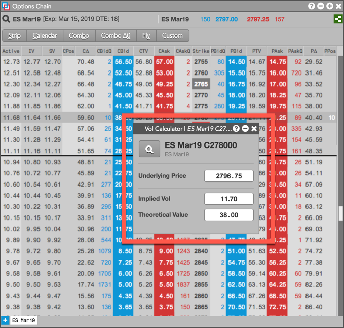
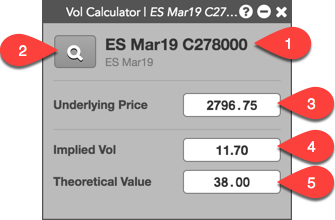

The Volatility Calculator widget is used for calculating the Theoretical Value and Implied Volatility of an option at any underlying price. You can enter a Theoretical Value of an option to calculate its Implied Vol, or enter the option's Implied Vol to calculate its theoretical option price. For example, you can use the calculator to determine at what price you need to trade an options contract for a specific Implied Vol.

Note: The Volatility Calculator widget is only available for Advanced Options users.
To open the Volatility Calculator, right-click an options instrument to open the context menu and select Open | Open Vol Calculator in the following widgets:
- Options Chain — Right-click in a market data column
- Market Grid — Right-click the market data or contract name
- MD Trader — Right-click the price ladder, header panel, or order panel
The Volatility Calculator widget can also be opened as a linked widget or custom widget, and can be used as part of a group widget.
Volatility Calculator Display
The Volatility Calculator consists of the following:

- Instrument name and underlying product name — Shows the name of the option instrument and underlying product for which you opened the calculator.
- Market Explorer — Opens Market Explorer to allow you to select a different instrument for the calculator.
- Underlying Price field — Shows the LTP (last traded price) of the underlying futures contract and is required for calculating the Implied Vol and Theoretical Values. Enter a different underlying price to recalculate these values as needed.
- Implied Vol field — Allows you to enter an Implied Volatility value to calculate the Theoretical Value (price) of the options instrument.
- Theoretical Value field — Allows you to enter the options instrument's Theoretical Value (price) to calculate its Implied Vol.